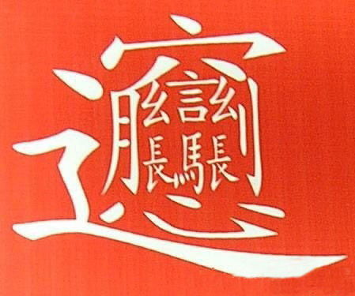
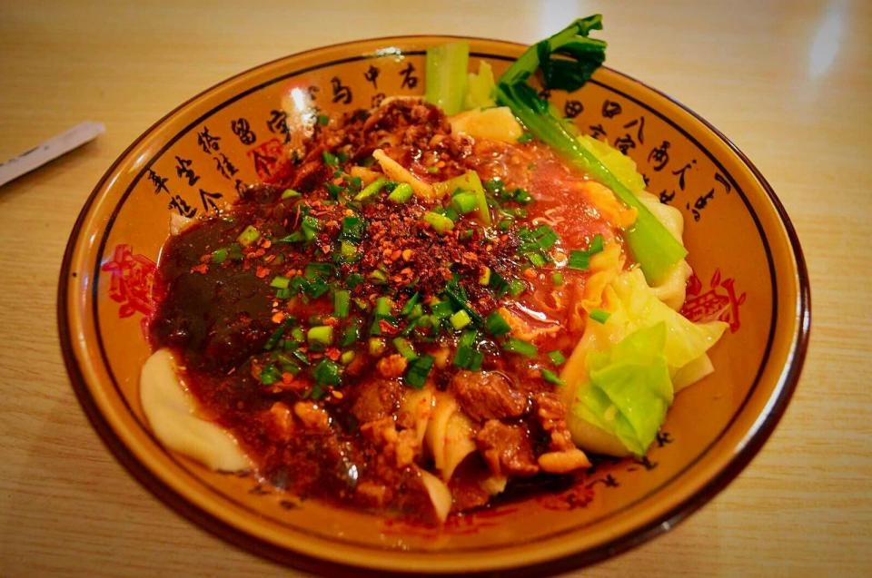

概述
特指关中麦子磨成的面粉，通常手工拉成长宽厚的面条。由上等面粉精制而成，用酱油、醋、味精、花椒等佐料调入面汤，捞入面条，淋上烧热的植物油即成。
制作方法
材料：手擀面二斤（因人而异）（面粉最好是关中冬小麦所磨之面）、辣椒面（最好是陕西乾县线线辣子）、biangbiang面。
花生油、胡萝卜、青蒜、葱、姜、蒜、花椒（若干）。
做法：
1.胡萝卜切丝，开水焯熟，备用。
2.青蒜、姜、蒜、葱白切碎，备用。
3.面条煮熟、箜干、可过水。
4.花生油加热，倒入花椒，中火，油滚热。
5.面捞出置碗，在面条上撒匀葱姜蒜、青蒜、辣椒面。
6.热油趁热迅速泼在面上。
相关传说
传说，一位集怀才不遇愤世嫉俗贫困潦倒饥寒交迫于一身的秀才来到咸阳，他路过一家面馆时，听见里面“biang——biang——”之声不绝于耳，一时饥肠辘辘，不由得踱步进去。只见白案上摆满了和好的长条状面块儿，师傅拎过一块儿，扯住两头，顷刻间摔打成裤带般宽厚扔进锅里，顷刻间摔打了好几块儿，顷刻间从锅里捞出一大海碗，碗底事先盛着作料和一些豆芽青菜，自然要浇上一大勺油泼辣子，热腾腾端上来。秀才看得兴起， 大叫：“好啊！店家来一碗！”“这位客官一碗……”店小二一声长长的吆喝，顷刻间一碗面摆到面前，顷刻间碗中罄净，直吃得秀才大汗淋漓。“店家，结账！”秀才喝道。 一摸兜，坏了，一时忘形，竟忘了囊中早已空空如洗，顿时窘住，刚才的热汗顷刻间冷冰冰刷在脸上。一旁，店小二斜着眼耸着肩，一脸坏笑。“小二……”秀才讪讪，话刚出口便被店小二堵住：“客官，本店小本经营，概不赊账。”见店小二不通融的模样，秀才又向身上摸去，左一摸，右一摸，上一摸，下一摸，好像早晚能摸出几文钱来似的。 店小二心想：“你个穷秀才，看你摸出什么来。”天呀，这不是有辱斯文么？秀才一面摸，一面思量脱身之计。他与店小二搭讪：“小二，你家这面何名？”“何名biang”店小二学着秀才的腔调说：“biangbiang面。”秀才问：“biangbiang面？biangbiang字咋写？”这家面店可是远近闻名的老字号，其面做得特殊，面与面板摔打撞击，“biangbiang”也，故称“biangbiang面”。“biangbiang”二字咋写，店家做面，客人吃面，谁也没去想过。见店小二答不上来，秀才顿时有了主意，他说：“小二，你与老板商量过，本人今天没钱，可否写出‘biangbiang’二字，换这碗面吃？”店小二顷刻间回来，说：“成。”店家心想：“古来就没有‘biangbiang’二字，看你穷秀才怎么赖账。”“biang、biang、biang、biang……”秀才心里嘀咕，嘴上嘀咕。
秀才读书，也最认书，古往今来偏偏没有这“biang、biang”二字。“书上没有，岂可生造乎？”皇上可以造字为名，秀才岂敢与之比肩？秀才满腹心酸，一腔惆怅；寒窗苦读，功不成，名不就，众目睽睽下，落到赖账这般田地，天理不公啊！他一急，心里骂皇上：“什么‘日月当空照’？民间疾苦，哀鸿遍野；宫闱倾轧，豺狼当道；贪官污吏，横行乡里；我秀才寒窗苦读，就因无钱无人，打不通关节，获不取功名……日月何照之有！罢罢罢，你皇上能造字，我秀才何尝不能？”秀才一声大喝：“笔墨伺候！”只见他笔走龙蛇，大大地写了一个□！他一边写，一边歌道：“一点飞上天，黄河两边弯；八字大张口，言字往里走，左一扭，右一扭；西一长，东一长，中间加个马大王；心字底，月字旁，留个勾搭挂麻糖；推了车车走咸阳。”一个字，写尽了山川地理，世态炎凉。
秀才写罢掷笔，满堂喝彩。从此，“biangbiang面”名震关中。